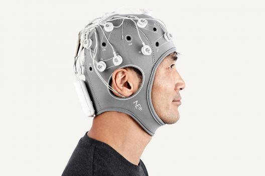

Link for Prosthetic History.
Link for Prosthetic History.
 Link for Regenerative medicine article.
Link for Regenerative medicine article.

Drugs, Brain, and Behavious; the Science of Addiction.I am Tahira Nasr, of Air University, studying Bachelor's of Biomedical Engineering, ID 2502755.
Why Biomedical Engineering?Biomedical Engineering is an interdisciplinary field which involves helping humans through technological advancements. Such a field was exciting to me because of my love for helping people somehow, and the idea that such a field would not lose relevance so easily in the near future anytime soon.

This is a webpage meant to answer some basic questions aboout my choices in life, most notably about my decision to revolve my practical life around Biomedical Engineering, an emerging science field integrating mechanical, electrical, biological sciences, and ICT. It involves discovering ways to make innovative devices that can help humnans with medical problems.
Fascinating Aspects of BMEBiomedical Engineering is an innovative field whose potential is still being discovered every passing day. It has limitless oppurtunities as human health is an important thing to take care of, therefore it will never lose relevance, and scientists and peope will only ever try to improve their methods of healing humans, or diagnosing a problem before it becomes serious, or actually treating a disease. Some of the most fascinating aspects of this field are as follows:
.jpg)
As for myself, as a student of BME on its own, I too entered this degree with ideas in my head to make the impossible possible, by integrating my imagination, real world problems, and the awareness and education this degree gives me to make a device that serves humanity in the best ways (and may or may not set me for life) I have grown up with my mother who almost always suffered knee pain as the years went on. I have also seen people suffer because of ruined organs or tissues that stopped functioning properly after an injury. And all the books i read almost always had some character who would suffer due to drug addiction that they couldn't fix even if they tried. For my own world, i wish to make a device of therapeutic or rehabilitative nature, that helps people regain hope in the world, and the vision of a better tomorrow should my device succeed. I would be fulfilling my reason on this Earth, leaving it a better place than when i found it. Some ideas I have that may stand a chance of countering these aforementioned problems are:
Link for Prosthetic History.
Link for Regenerative medicine article.

Drugs, Brain, and Behavious; the Science of Addiction.